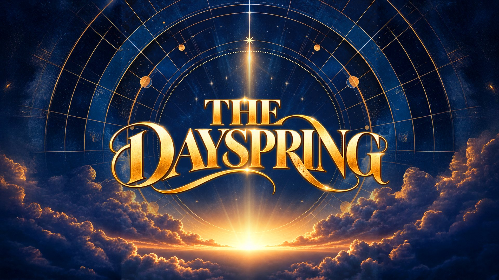

Kartumu sudah jadi
Scan, lalu bawa pulang.
Story untuk Instagram dan 4 foto satuan siap cetak. Link aktif 7 hari.
Dikembangkan oleh JC Flow Media

Mencetak
Kartumu sudah jadi
Story untuk Instagram dan 4 foto satuan siap cetak. Link aktif 7 hari.